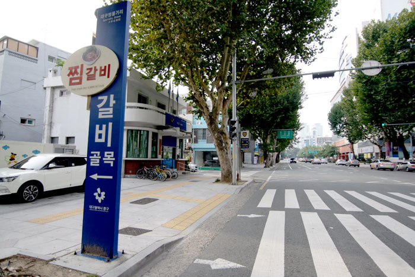

동인동찜갈비골목
대차게 맵고, 화끈한 대구의 맛!
대구사람들은 우리가 보통 먹는 갈비찜이 아니라 "찜갈비"를 먹습니다. "찜"이라는 한 글자가 그것도 위치만 달리했을 뿐인데, 갈비찜과 찜갈비의 맛은 천지차이 입니다.
여느 갈비찜처럼 밤이나 대추 등이 들어가는 대신, 양은냄비에 고춧가루와 마늘, 생강 등이 들어가는데 이렇게 특이한 "찜갈비" 는 "숨이 막히도록 더운" 대구에 사는 사람들이 만들어
낸
"화끈한" 음식입니다.
찜갈비의 역사는 1960년대 대구시 동인동 어느 주택가 골목, 유난히 갈비를 좋아했던 부부에게서 시작되었다고 합니다.
그들은 더운 복날이 되면 정육점에서 갈비를 사 와 가마솥에 푹 익혀먹었는데, 처음에는 그냥 소금에 찍어 먹다가, 얼큰한 맛을 좋아하
그들은 더운 복날이 되면 정육점에서 갈비를 사 와 가마솥에 푹 익혀먹었는데, 처음에는 그냥 소금에 찍어 먹다가, 얼큰한 맛을 좋아하
는 남편 때문에 점차 마늘과 고추를 듬뿍 곁들여 먹게 되었고, 이것이 점점 발전을 거듭하면서 부부만의 매운소스를 개발하게 되고, 이 맛이 주변에 소문이 나면서 부부는 결국 12평
한옥에서 가마솥에 찐 갈비를 손님들에게 팔기 시작했는데 이것이 그 기원입니다.더운 여름날, 눈물 쏙 빠지도록 화끈한 맛을 찾는 대구 사람들에게 찜갈비는 광장한 인기를 끌었고, 그
후 동인동 주택가에는 한 집 두 집 같은 메뉴를 하는 식당이 생기더니, 지금처럼 `찜갈비 골목` 이 들어섰습니다.
1
/
2